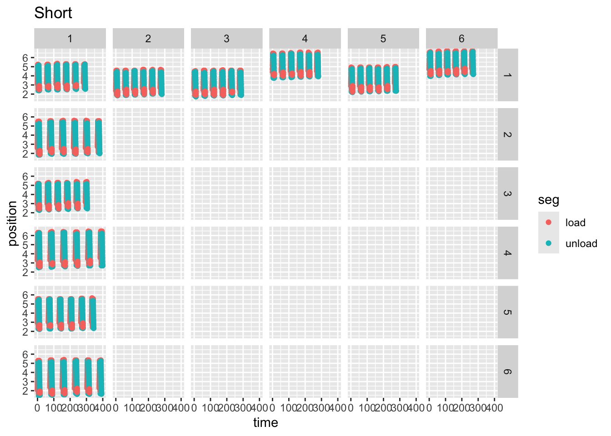
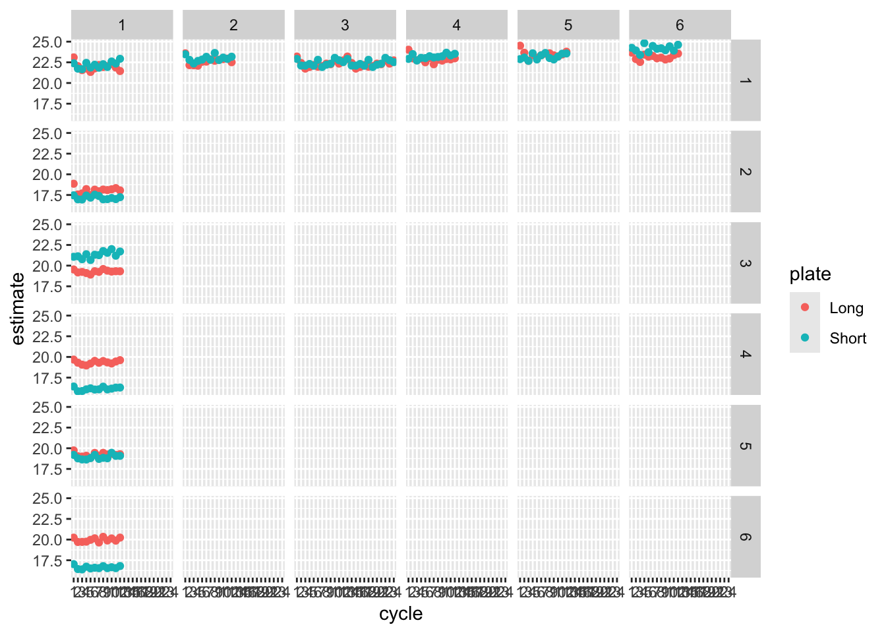

library(dplyr) # for manipulating dataframes
library(ggplot2) # for plotting
# If you don't have bluer install it with
# inatall.packages("devtools")
# devtools::install_github(repo = "yadbor/bluer")
library(bluer) # routines for analysing mechanical test data
data_root <- here::here("data-raw", "Experiment 2", "Results", "VIC-3D data")
data_col_names <- "File Number,U [mm],V [mm],W [mm],Time_1,position,load"
data_cols <- stringr::str_split_1(data_col_names, ",")Medartis Wrist Plates
Experiment 2 - bending and shear matched
setup
Load any needed libraries and define some constants.
read the data files
Get all the .csv file names under the data_root folder and store them in a list.
Then run the list of file paths names through a pipeline that does the following:
- Name every list element with the
basenamefrom the path
(i.e. just the file name with no path or extension) - Read each .csv file into the list as a dataframe
- Keep only the wanted columns in each dataframe
- Stack the read dataframes, adding the names from the list as a column
# Find all .csv files under the data_root
file_path <- list.files(path = data_root, pattern = "*.csv",
full.names = TRUE, recursive = TRUE)
all_results <- file_path |>
setNames(basename(file_path)) |> # name each item in the list with its basename
purrr::map( \(df) readr::read_csv(df, show_col_types = FALSE) |>
select(data_cols)
) |>
bind_rows(.id = "filename") # bind together, adding a column for the nameall_results is now a big dataframe (actually a tibble) holding all the results from all tests, labelled with their file name. This will work for studies like this one where all the meta-data are in the file names. For some studies some of the meta-data can be in the folder name as well. In those cases the final folder name can be extracted using basename(pathname(full_path)).
extract test information
The filenames have the plate type, id and repeat encoded as:
“{Long|Short} Plate {id} T{repeat}_Data.csv”
Extract these into separate columns to identify each test. Because the filenames don’t have clean delimiters use a regex to break them up.
Some names have special issues, like the two that were repeated (T1.2 & T2.2). Clean those up here as well.
all_results <- all_results |>
tidyr::separate_wider_regex(cols = filename,
patterns = c(plate = "^\\w+", "\\D*",
id = "\\d+", "\\s*T",
rep = "[\\d\\.]+", ".*"),
cols_remove = FALSE
) |>
# Deal with special cases.
# In this study, T1.2 and T2.2 replace T1 and T2
mutate(rep = stringr::str_remove(rep, "\\..*")) # delete everything after "."Replace the column names with names that are easier to manipulate in code but still convey their purpose
all_results <- all_results |>
rename(frame = `File Number`,
u = `U [mm]`, v = `V [mm]`, w = `W [mm]`,
time = `Time_1`)save clean data
Write the cleaned data to a .csv file before starting the analysis.
all_results |>
readr::write_csv(file = here::here("data", "all_results.csv"))analyse cycles
Each test has multiple load-unload cycles. Data are recorded on the 9th and 10th cycles, and this is repeated every 10 cycles up to a total of 60 cyles. We are interested in the loading part of each cycle.
Divide test into cycles by finding peaks and troughs. The loading phase is the one going towards a peak, and the unloading phase is towards a trough.
The bluer package has routines for finding peaks and labelling cycles and phases.
But first, as these tests are all in compression, the load and position are all negative. Invert them both so that graphs read better for most people.
cycles <- all_results |>
mutate(position = -1.0 * position, load = -1.0 * load) |> # Invert these axes
group_by(plate, id, rep) |> # group each test
mutate(as_tibble(bluer::label_cycles(position))) |> # and label the cycles
mutate(cycle = factor(cycle)) |> # Make the cycle a factor for easier plotting
mutate(uid = paste0(plate,id,rep,cycle)) # uniquely identify each cycle
# Check what we have done
cycles |> ggplot() +
aes(x = time, y = position, colour = seg, group = rep) +
geom_point(aes(shape = rep)) +
facet_grid(rows = vars(plate), cols = vars(id)) |>
labs(title = "everything, everywhere, all at once")# that plot was crowded, so do separate ones for each plate
#
cycles |>
filter(plate == "Long") |>
ggplot() +
aes(x = time, y = position, colour = seg, group = rep) +
geom_point() +
facet_grid(rows = vars(id), cols = vars(rep)) +
labs(title = "Long")cycles |>
filter(plate == "Short") |>
ggplot() +
aes(x = time, y = position, colour = seg, group = rep) +
geom_point() +
facet_grid(rows = vars(id), cols = vars(rep)) +
labs(title = "Short")
Plot just the loading portion of each cycle, as load vs position.
loading <- cycles |>
filter(seg == "load")
loading |>
filter(plate == "Short") |>
ggplot() +
aes(x = position, y = load, colour = cycle, group = uid) +
geom_line() +
facet_grid(rows = vars(id), cols = vars(rep)) +
labs(title = "load vs position - Short")loading |>
filter(plate == "Long") |>
ggplot() +
aes(x = position, y = load, colour = cycle, group = uid) +
geom_line() +
facet_grid(rows = vars(id), cols = vars(rep)) +
labs(title = "load vs position - Long")analysis
To get the stiffness of each test we fit a linear model by least squares.
loading_models <- loading |>
#group_by(uid) |>
group_by(plate, id, rep, cycle) |>
summarise(
model = list(
lm(load ~ position, data = pick(everything()))
)
)`summarise()` has grouped output by 'plate', 'id', 'rep'. You can override
using the `.groups` argument.loading_models |>
mutate(glance = purrr::map(model, broom::glance))|>
tidyr::unnest(glance)# A tibble: 288 × 17
# Groups: plate, id, rep [22]
plate id rep cycle model r.squared adj.r.squared sigma statistic
<chr> <chr> <chr> <fct> <list> <dbl> <dbl> <dbl> <dbl>
1 Long 1 1 1 <lm> 0.996 0.996 1.05 2776.
2 Long 1 1 2 <lm> 0.996 0.996 1.22 2981.
3 Long 1 1 3 <lm> 0.996 0.995 1.27 3034.
4 Long 1 1 4 <lm> 0.998 0.997 0.934 4936.
5 Long 1 1 5 <lm> 0.995 0.995 1.37 2824.
6 Long 1 1 6 <lm> 0.997 0.997 1.01 4165.
7 Long 1 1 7 <lm> 0.997 0.996 1.14 3162.
8 Long 1 1 8 <lm> 0.998 0.998 0.781 7017.
9 Long 1 1 9 <lm> 0.995 0.995 1.38 2797.
10 Long 1 1 10 <lm> 0.997 0.997 1.08 3903.
# ℹ 278 more rows
# ℹ 8 more variables: p.value <dbl>, df <dbl>, logLik <dbl>, AIC <dbl>,
# BIC <dbl>, deviance <dbl>, df.residual <int>, nobs <int># Extract the slope components of the models
lm_fits <- loading_models |>
mutate(tidy = purrr::map(model, broom::tidy)) |>
tidyr::unnest(tidy) |>
filter(term != '(Intercept)')
lm_fits# A tibble: 288 × 10
# Groups: plate, id, rep [22]
plate id rep cycle model term estimate std.error statistic p.value
<chr> <chr> <chr> <fct> <list> <chr> <dbl> <dbl> <dbl> <dbl>
1 Long 1 1 1 <lm> position 23.1 0.438 52.7 1.47e-13
2 Long 1 1 2 <lm> position 22.0 0.404 54.6 9.38e-16
3 Long 1 1 3 <lm> position 21.6 0.391 55.1 8.56e-17
4 Long 1 1 4 <lm> position 21.7 0.310 70.3 4.59e-17
5 Long 1 1 5 <lm> position 21.3 0.402 53.1 1.36e-16
6 Long 1 1 6 <lm> position 21.8 0.337 64.5 1.27e-16
7 Long 1 1 7 <lm> position 22.2 0.394 56.2 6.95e-15
8 Long 1 1 8 <lm> position 21.9 0.262 83.8 5.59e-18
9 Long 1 1 9 <lm> position 22.0 0.417 52.9 1.45e-16
10 Long 1 1 10 <lm> position 22.3 0.357 62.5 1.87e-16
# ℹ 278 more rowslm_fits |> ggplot() +
aes(x= cycle, y = estimate, colour = plate) +
geom_point() +
facet_grid(rows = vars(id), cols = vars(rep))
lm_fits |> filter(rep == 1) |> ggplot() +
aes(x= cycle, y = estimate, colour = plate) +
geom_point() +
facet_grid(cols = vars(id), rows = vars(plate))check for effect of cycling
We have six plates, each tested mutiple times, and each test consisting of multiple cycles. To test if the number of cycles is having an effect we need a two way repeated measured ANOVA, because both the tests and the cycles are repeated for each plate.
# lm_fits |>
# summarise(
# anova = list(aov(estimate ~ rep * cycle + Error(id / (rep * cycle))))
# )